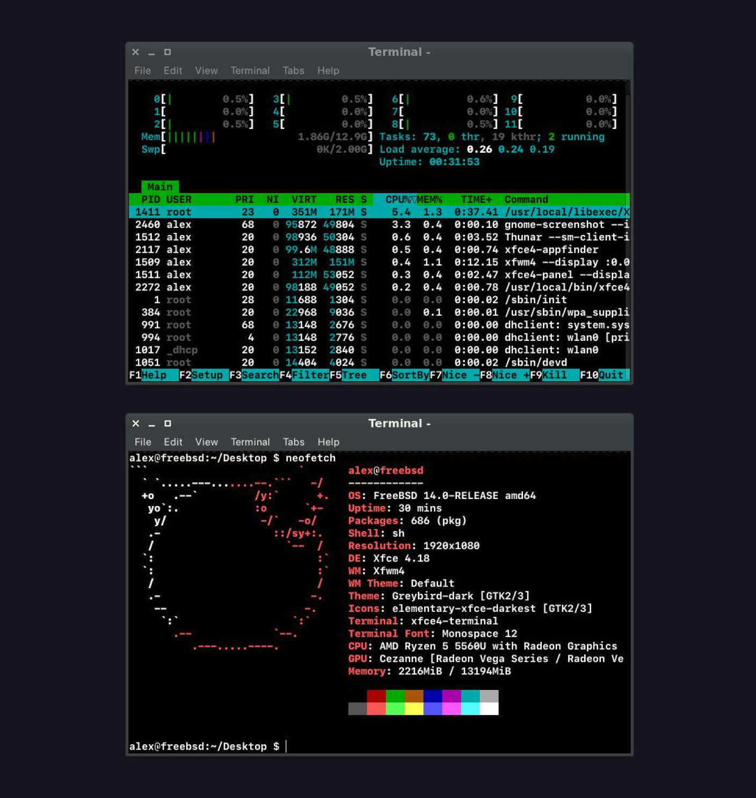

Can cheap MiniPC with FreeBSD 14 outperform MacBook Pro M1 Pro?
TL;DR
I put my €1800 MacBook Pro M1 Pro head-to-head with a €300 mini PC and found the cheaper option surprisingly fast. While the mini PC couldn’t completely replace my Mac for work due to some software and hardware limitations, it made me question the need for expensive purchases. Do we really need the latest and greatest hardware to be productive? Or are we being pushed to constantly upgrade for features we might not even fully utilize?
Introduction
I often wonder how much computing power we need to strike a balance between “fast enough to use comfortably” and “overpowered and overpriced so you never use it to its full potential”?
Slow computer hardware frustrates me. If you can think faster than your computer or perform operations quickly, but it takes “time to think while showing you a beach ball,” you’re wasting your time. When a computer takes seconds to think “here” and another few seconds “there,” it adds up to hours of wasted time over the years. Additionally, waiting for the computer to finish operations fragments your attention significantly.
I know this from experience. Growing up with slow dial-up modems in the 90s, I had to wait several seconds, sometimes even dozens of seconds, for a web page with all its images to fully load. Since then, I’ve developed a habit of getting distracted by other tasks too often while working.
For me, having a fast computer is both a way to stay focused and save time.
But I often wonder: how much computing power is enough?
As a longtime Mac user, I decided to look for a cheap alternative by installing FreeBSD to see what I could achieve.
Why FreeBSD? Simply because I had experience with it in 90s. I understand its principles better than Linux (which has evolved in different directions over time). For me, FreeBSD has always been about efficiency multiplied by customizability. I was aware of the problems with Wi-Fi, but since I mostly use an Ethernet connection, the Wi-Fi issues weren’t an obstacle.
€1800 MacBook Pro vs. €300 Mini PC review
My MacBook Pro M1 Pro, which cost around €1800, has the following specs:
- 10 CPU cores (8 performance and 2 efficiency)
- 16 GB of RAM, LPDDR5
- SSD hard drive
- macOS Sequoia
For this test, I bought a mini PC with the following specs:
- Mini PC Beelink SER5 5560U, AMD Ryzen 5 with integrated CPU (Cezanne Radeon Vega)
- 16 GB RAM, DDR4
- M.2 NVMe SSD
- FreeBSD 14.0
I installed FreeBSD 14.0, Xfce, and Firefox.
After some basic tweaking using this amazing guide, FreeBSD achieved the same boot time as my expensive MacBook.

The good
Surprisingly, Firefox was able to play YouTube videos faster than on the Mac. It felt as if videos were loading from local storage every time I clicked somewhere on the timeline. The Mac would take a fraction of a second to resume playback with the same version of Firefox. Both machines were connected via Ethernet cable during testing, not Wi-Fi.
CPU usage on FreeBSD was nearly idle at 0-0.5% across a couple of cores. Impressive! With the same applications on macOS, I typically see about 10-20% usage across several cores when idle.
I believe macOS is accumulating more and more unnecessary features, each of which occupies memory and uses CPU even when not actively used. Features like video wallpapers, desktop widgets, handoff, photo library analysis, and so on. Some of these are built into macOS, so you can’t completely disable them even if you’re not using them.
At one point, I experimented with Motif Window Manager (MWM), which uses no more than 25MB (MB!!) of RAM. On macOS, it’s usually 10 times more. Impressive.
What I don’t like about FreeBSD in 2025
- Fonts. They’re not aesthetically pleasing. The font rendering differs from Mac’s. Even using the same 1080p monitor, I can see the difference, and I don’t prefer it. I changed the system font to SF Pro Display and adjusted font rendering settings to more closely match macOS.
- Software availability. I couldn’t find some of my favorite applications for FreeBSD. Applications like Ableton or Figma are only available for Windows/macOS.
- The packages collection lacks visual previews of applications. This is understandable since it’s primarily used from the console, but there’s no way to preview applications as you would in the Mac App Store. While there are links to package homepages where you can find screenshots, visiting each homepage is time-consuming. I think GhostBSD has a GUI version for this, but I don’t remember it having images either.
- FreeBSD and Wi-Fi drivers remain a persistent challenge. I hope they will resolve this soon.
Conclusion
After completing the test, I realized that I couldn’t completely switch platforms. Without Zoom, Figma, and other specific software, and considering the font rendering issues, I couldn’t use the mini-PC running FreeBSD as my main work computer. Figma works fine in Firefox, but I couldn’t get it to read local fonts, which was critical for me. And as an Apple developer and iOS/Mac interface designer, I still need to use macOS.
This experiment showed me the impressive capabilities of low-cost hardware. If you can work with FreeBSD, you don’t need to replace your computer every 5 years or so. However, with each macOS update, Apple adds more features, driven primarily by marketing to achieve more sales. In reality, we all — existing and new users — pay for this, as more features require more powerful hardware to run well, forcing us to upgrade. Consequently, Mac users get less value for their money.
Ultimately, I was pleased to discover that a €300 mini PC can run most basic tasks at the same speed as an €1800 Mac.
This video of FreeBSD running on a white MacBook 2009 impressed me. Most applications open almost instantly. Meanwhile, my 2017 MacBook struggles to run its latest supported macOS version smoothly! Remarkably, a 15-year-old white MacBook running FreeBSD performs better than an 8-year-old 2017 MacBook running macOS.
This indicates we’re somewhat locked into Apple’s hardware ecosystem, paying more than necessary, and this situation is unlikely to change soon, if ever. I’ll continue experimenting with FreeBSD as a side project, hoping that the FreeBSD Foundation will invest more in the desktop experience, as they recently promised.